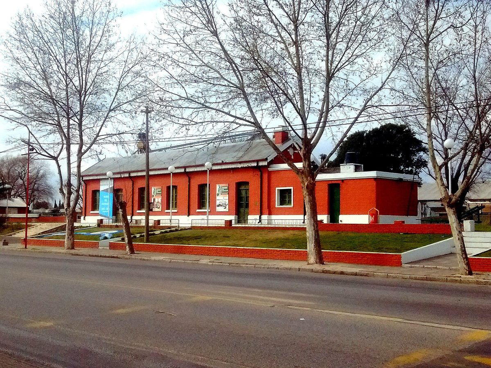

아르헨티나 코르도바 베르로타란 전력협동조합, 첫 태양광 800kW 준공…주택용 조합원 전기요금 15~20% 인하 추산

발전량은 조합이 주 전력공사에서 사 오는 전기의 약 3분의 1, 11월 고지서부터 반영…코르도바에선 배전 협동조합과 손잡은 솔라 공동체 12곳·11.4MW, 업체는 2027년 조합 17곳 40MW 내다봐
아르헨티나 코르도바주의 마을 베르로타란에서 전기 배전을 맡아 온 '베르로타란 전력·공공서비스 공급 협동조합'이 패널 1,204장, 설비 800kW 규모의 첫 태양광 발전소를 짓고 지난 23일 준공식을 열었으며, 발전소는 그 전부터 가동해 마을 전력망에 전기를 보내고 있었다. 다리오 레폴리 이사회 의장은 지역 라디오에서 이 발전소의 생산 능력이 조합이 주 전력공사(EPEC)에서 사 오는 전기의 약 3분의 1에 해당하며, 자체 발전으로 주 전력공사 의존을 일부 줄이게 된다고 설명했다. 조합은 이 전기로 주택용·주택 겸용 요금을 쓰는 조합원의 전기요금이 15~20% 줄어들 것으로 추산했고, 효과는 11월 납기 고지서부터 나타나 한 달 치 발전이 다 반영되는 12월에 더 커지지만 계절과 일사량에 따라 절감률은 달라질 수 있다고 밝혔다. 사업비와 자금 조달 방식은 알려지지 않았다. 코르도바에서는 내륙 마을의 배전 협동조합이 태양광 사업의 중심에 서는 흐름이 이어지고 있는데, 지역 업체 이리스 에네르히아(Iris Energía)는 루케(Luque)를 시작으로 우잉카 레난코·아로이토·리오 프리메로 등에서 이른바 '솔라 공동체' 12곳, 합계 11.4MW 개발에 참여했고 모든 사업의 핵심 파트너가 배전 협동조합이었다고 밝혔다. 이 회사는 3MW 발전소(땅값 빼고 220만 달러)에 중소기업이나 개인이 투자자로 들어와 자기 몫 발전량을 사용량과 가상으로 상계하는 모델을 내세우며, 올해 1~9월 도매 전력 평균이 MWh당 106달러였던 것과 달리 솔라 공동체 전기는 MWh당 45달러로 25년 고정된다고 주장했고, 2027년에는 협동조합 17곳이 참여하는 40MW 사업을 내다봤다.
시민에너지 관점
발전소 하나가 조합이 사 오는 전기의 3분의 1을 대신하고 그 몫이 주택 조합원의 요금 15~20% 인하로 돌아간다는 베르로타란의 계산은, 배전을 맡은 주민 협동조합이 발전까지 가지면 이익이 먼 배당이 아니라 매달 받는 고지서로 바로 돌아온다는 것을 보여 준다. 작은 마을 조합이 발전소를 지을 자본과 기술을 갖출 수 있겠느냐는 우려가 나올 수 있지만, 미국에서도 1936년 농촌전력화법 이후 민간 전력회사가 외면한 시골에서 주민들이 전기협동조합을 세워 스스로 전기를 들였고, 코르도바에서는 솔라 공동체 12곳이 모두 배전 협동조합과 손잡았다. 다만 업체가 개발하고 외부 투자자가 지분을 사는 방식에서는 이익이 조합원 밖으로 빠져나갈 수 있어, 처음부터 지분을 누가 갖는지를 정해 두는 것이 관건이다. 국내에서도 마을과 협동조합이 지역 발전소의 주인이 되어 그 이익을 주민 전기요금과 지역 살림으로 돌릴 수 있도록, 공동체 소유 발전소의 전기를 이웃이 직접 나눠 쓰는 제도부터 열어야 한다.
출처: La Ribera Web 2026-10-28 Florencia Guttlein 원문 보기
출처: La Voz del Interior 2026-10-28 Daniel Alonso 원문 보기
アルゼンチン・コルドバ州ベロタランの電力協同組合、初の太陽光800kWが完成…住宅用組合員の電気料金15〜20%引き下げを試算
発電量は組合が州電力公社から買う電気の約3分の1、11月の請求書から反映…コルドバでは配電協同組合と組んだソーラー・コミュニティ12カ所・11.4MW、企業は2027年に組合17団体で40MWを見込む
アルゼンチン・コルドバ州の町ベロタランで配電を担ってきた「ベロタラン電力・公共サービス供給協同組合」が、パネル1,204枚、設備容量800kWの初の太陽光発電所を建設し、23日に完成式を開いた。発電所はそれ以前から稼働し、町の電力網に電気を送っていた。ダリオ・レポリ理事長は地元ラジオで、この発電所の生産能力は組合が州電力公社（EPEC）から買っている電気の約3分の1に当たり、自前の発電で州電力公社への依存を一部減らせると説明した。組合は、この電気によって住宅用・住宅併用料金の組合員の電気料金が15〜20%下がると試算し、効果は11月納期の請求書から表れ、1か月分の発電がすべて反映される12月にさらに大きくなるが、季節や日射量によって削減率は変わりうるとしている。事業費や資金調達の方法は明らかにされていない。コルドバでは内陸の町の配電協同組合が太陽光事業の中心に立つ流れが続いており、地元企業イリス・エネルヒア（Iris Energía）は、ルケ（Luque）を皮切りにウインカ・レナンコ、アロイート、リオ・プリメロなどでいわゆる「ソーラー・コミュニティ」12カ所、計11.4MWの開発に参加し、すべての事業で中心的なパートナーは配電協同組合だったとしている。同社は、3MWの発電所（土地代を除き220万ドル）に中小企業や個人が投資家として加わり、自分の持ち分の発電量を使用量と仮想的に相殺するモデルを掲げ、今年1〜9月の卸電力価格が平均MWh当たり106ドルだったのに対し、ソーラー・コミュニティの電気はMWh当たり45ドルで25年間固定されると主張し、2027年には協同組合17団体が参加する40MWの事業を見込んでいる。
市民エネルギーの視点
発電所一つが組合の購入電力の3分の1を置き換え、その分が住宅用組合員の料金15〜20%引き下げとして戻るというベロタランの計算は、配電を担う住民協同組合が発電まで手にすれば、利益は遠い配当ではなく毎月の請求書としてすぐに戻ってくることを示している。小さな町の組合に発電所を建てる資本や技術があるのかという懸念もありうるが、米国でも1936年の農村電化法以降、民間電力会社が見向きもしなかった農村で住民が電気協同組合をつくって自ら電気を引き、コルドバではソーラー・コミュニティ12カ所のすべてが配電協同組合と手を組んだ。ただし企業が開発し外部の投資家が持ち分を買う方式では利益が組合員の外へ流れ出るおそれがあり、最初から誰が持ち分を持つかを決めておくことが鍵となる。韓国でも村や協同組合が地域の発電所の主人となり、その利益を住民の電気料金と地域の暮らしに回せるよう、コミュニティが所有する発電所の電気を近隣で直接分け合う制度から開くべきだ。
出典: La Ribera Web 2026-10-28 Florencia Guttlein 原文を読む
出典: La Voz del Interior 2026-10-28 Daniel Alonso 原文を読む
阿根廷科尔多瓦省贝罗塔兰电力合作社首座800kW光伏电站落成…预计住宅社员电费下降15~20%
发电量约为合作社从省电力公司购电量的三分之一，11月账单起体现…科尔多瓦与配电合作社合作的"太阳能社区"已有12个、11.4MW，企业预计2027年17家合作社参与40MW项目
负责阿根廷科尔多瓦省贝罗塔兰镇配电的"贝罗塔兰电力及公共服务供应合作社"建成首座光伏电站，共有光伏板1,204块、装机800kW，并于23日举行落成仪式；电站此前已经投运，向镇上电网供电。合作社理事会主席达里奥·莱波里在当地电台介绍，这座电站的发电能力约相当于合作社从省电力公司（EPEC）购电量的三分之一，自发电可以部分减少对省电力公司的依赖。合作社估计，这部分电力将使使用住宅及住宅兼用电价的社员电费下降15~20%，效果从11月到期的账单开始体现，到整月发电全部计入的12月会更明显，但节省幅度会随季节和日照而变化。项目投资和融资方式没有公布。在科尔多瓦，内陆城镇的配电合作社站到光伏项目中心的趋势仍在延续：当地企业Iris Energía表示，从卢克（Luque）起步，已在温卡雷南科、阿罗伊托、里奥普里梅罗等地参与开发了12个所谓"太阳能社区"，合计11.4MW，所有项目的核心伙伴都是配电合作社。该公司主推的模式是：中小企业或个人作为投资者加入3MW电站（不含地价220万美元），把自己份额的发电量与用电量进行虚拟抵扣；公司称今年1~9月批发电价平均每MWh 106美元，而太阳能社区的电价为每MWh 45美元、固定25年，并预计2027年将有17家合作社参与40MW项目。
市民能源视角
一座电站替代合作社三分之一的购电量，省下的钱以住宅社员电费下降15~20%的形式返还，贝罗塔兰的这笔账说明，负责配电的居民合作社一旦拥有发电，收益就不是遥远的分红，而是每月账单上的直接实惠。也许有人担心小镇合作社没有建电站的资本和技术，但在美国，1936年《农村电气化法》之后，居民们在民营电力公司不愿涉足的乡村自己组建电力合作社把电引进来；在科尔多瓦，12个太阳能社区也全部与配电合作社合作。不过，在由企业开发、外部投资者购买份额的模式下，收益可能流到社员之外，因此从一开始就明确谁持有份额是关键。韩国也应先打开让邻里直接分享社区所有电站电力的制度，让村庄和合作社成为本地电站的主人，把收益转化为居民电费的减轻和地方生活的改善。
来源: La Ribera Web 2026-10-28 Florencia Guttlein 查看原文
来源: La Voz del Interior 2026-10-28 Daniel Alonso 查看原文
Electricity co-operative in Berrotarán, Córdoba, Argentina, inaugurates its first 800kW solar park and estimates a 15-20% cut in household members' bills
Output equals about a third of the power the co-op buys from the provincial utility, with savings showing from November bills; in Córdoba, 12 "solar communities" totalling 11.4MW have been built with distribution co-ops, and a developer expects 17 co-ops in a 40MW project in 2027
The Berrotarán Electricity and Other Public Services Co-operative, which distributes power in the town of Berrotarán in Argentina's Córdoba province, has built its first solar park — 1,204 panels with 800kW of capacity — and held an inauguration on the 23rd, though the plant had already been running and feeding the local grid before then. Darío Lepori, chair of the co-operative's board, told local radio that the park's output is equivalent to about a third of the electricity the co-op buys from the provincial utility EPEC, and that generating its own power will partly reduce that dependence. The co-operative estimates that the power will cut bills by 15-20% for members on residential and mixed residential tariffs, with savings showing from bills due in November and growing in December once a full month of output is counted, though the reduction will vary with the season and sunshine. The project's cost and financing have not been disclosed. In Córdoba, distribution co-operatives in inland towns are increasingly at the centre of solar projects: the local firm Iris Energía says it has helped develop 12 so-called "solar communities" totalling 11.4MW, starting in Luque and extending to Huinca Renancó, Arroyito, Río Primero and elsewhere, with distribution co-ops as the key partner in every case. The company promotes a model in which small businesses or individuals invest in a 3MW plant (US$2.2 million excluding land) and virtually offset their share of output against their own consumption, claiming that while wholesale power averaged US$106 per MWh from January to September this year, solar-community power costs US$45 per MWh fixed for 25 years, and it expects a 40MW project involving 17 co-operatives in 2027.
Citizen Energy View
Berrotarán's arithmetic — one plant replacing a third of the co-op's purchased power, with that share returned as a 15-20% cut in household members' bills — shows that when a residents' co-operative that already runs the local grid also owns generation, the benefit comes back not as a distant dividend but directly on the monthly bill. Some may doubt that a small-town co-op can muster the capital and know-how to build a power plant, but in the United States, after the Rural Electrification Act of 1936, rural residents whom private utilities had passed over formed electric co-operatives and brought in power themselves, and in Córdoba all 12 solar communities have partnered with distribution co-ops. Where a developer builds and outside investors buy the shares, however, profits can flow away from members, so deciding from the outset who holds the equity is the crux. Korea should start by opening the way for neighbours to share power directly from community-owned plants, so that villages and co-operatives can own local generation and turn its returns into lower bills and a stronger local economy.
Source: La Ribera Web 2026-10-28 Florencia Guttlein Read the original
Source: La Voz del Interior 2026-10-28 Daniel Alonso Read the original